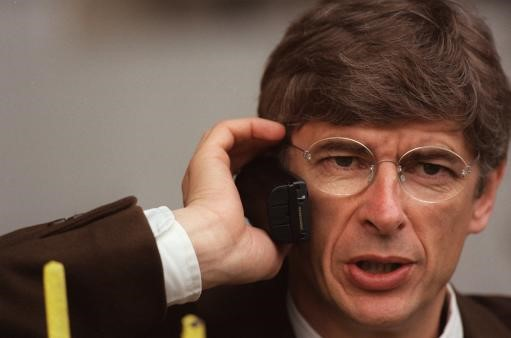

Chương 27

gay từ đầu mùa 1996-1997, Alex Ferguson nhận thấy những thay đổi nơi Eric Cantona.Tiếp quản băng thủ quân từ Steve Bruce, vẫn giữ vai trò không thể thiếu trên hàng công, nhưng dường như Cantona đã mất lửa. Một phần hồn của anh dường như không còn nằm ở Old Trafford. Sau lúc tham gia một trận đấu từ thiện ở Barcelona cùng Jordi Cruyff, trông Cantona lại càng thêm lơ đãng. Anh có vẻ đã phát chán với Manchester lạnh lẽo, và đang mơ về cuộc sống mới ở xứ Catalonia đầy nắng đẹp[1]. Đáng lo hơn nữa, “nhà vua” bắt đầu chểnh mảng việc tập thể hình, nên lên cân, có phần béo ra. “Có chuyện gì không?” Alex quan ngại, hỏi thẳng Cantona. Anh chỉ lắc đầu “Không sao cả”.
Nhưng rõ ràng là “có sao”. Trong hai trận bán kết Cúp C1 gặp Borussia Dortmund, Cantona chơi dưới mức trung bình, bỏ lỡ nhiều cơ hội trông thấy. Ngay cả khi đối thủ ghi bàn, anh cũng vẫn thờ ơ, không có vẻ gì là khẩn trương. Sau trận bán kết lượt về, anh đến gặp HLV, thổ lộ ý định muốn nghỉ hưu. Alex khuyên anh nên suy nghĩ thật kỹ, và trước khi quyết định, nên hỏi ý kiến cha. Ông biết hai cha con Cantona rất thân nhau, thầm hy vọng người cha có thể thuyết phục con đổi ý. Tâm trạng của Alex lúc đó đầy mâu thuẫn. Không muốn mất Cantona, song ông cảm thấy anh ra đi lúc này là hợp lý. Anh đã không còn khát vọng, dù có ở lại, thì trong những năm tới đây cũng chỉ là một cái bóng mờ. Sao bằng “trả ấn từ quan” ngay trên đỉnh vinh quang, để người hâm mộ còn nhớ mãi những hình ảnh đẹp!
Mùa giải kết thúc, Cantona lại đến gặp Alex Ferguson. Biết không gì có thể lay chuyển học trò được nữa, Alex chỉ hỏi anh tại sao giải nghệ quá sớm ở tuổi mới 30. Cantona đưa ra hai lý do: Thứ nhất, bộ phận thương mại của Manchester United xem anh như con cờ để kinh doanh kiếm tiền, khiến anh không còn hứng thú chơi bóng nữa; thứ hai, United quá thiếu tham vọng trên thị trường chuyển nhượng.
Bạn có thể ngạc nhiên về lý do thứ nhất, nhưng xin đừng quên: Cantona trước hết là một nghệ sỹ, anh chơi bóng vì niềm vui và vì cảm hứng, không phải vì tiền, nên khi cảm thấy niềm vui của mình bị tiền tài làm vấy bẩn, anh liền rời cuộc chơi. Trong Cantona có nét tương tự như nhà tài tử đời Lục Triều[2]: Lúc hứng lên thì chèo thuyền suốt cả một ngày đến nhà bạn; đến nhà bạn, chưa kịp gõ cửa,bỗng cạn hứng, bèn chèo thuyền về. Hứng lên thì làm, không hứng thì thôi, dù là sự nghiệp hay danh vọng, chẳng có gì quan trọng đến độ phải nuối tiếc. Giải nghệ rồi, Cantona đi đóng phim và tham gia đá bóng bãi biển. Đá bóng bãi biển chỉ kiếm được…bạc cắc, nhưng nó đem lại cho anh niềm vui đã mất trên sân cỏ chuyên nghiệp.
Về lý do thứ hai, Alex Ferguson hoàn toàn cảm thông. Manchester United đã trở thành đội bóng lớn nhất Anh Quốc, song Martin Edwards vẫn “keo cú” như xưa. Nhà vô địch ngoại hạng mà lại trả lương cho HLV trưởng thấp hơn một đội hạng nhất (Birmingham) trả cho cầu thủ (Steve Bruce). Trên thị trường, thật ra Alex đâu chỉ hài lòng với những bản hợp đồng như kiểu Jordi Cruyff hay Karel Poborsky. Ông muốn mua những siêu sao thượng thặng như “người ngoài hành tinh” Ronaldo hoặc “vua sư tử” Gabriel Batistuta, có điều là Edwards nhất quyết không chi tiền.
Bạn đọc có thể dễ dàng nhận thấy mâu thuẫn giữa hai lý do Cantona đưa ra. Nếu không tập trung làm kinh doanh thì lấy đâu ra tiền mua cầu thủ lớn? Nhưng Cantona là vậy, trong anh đầy những thái cực trái ngược, nên chúng ta không cần ngạc nhiên làm chi.
Tin Cantona giải nghệ làm CĐV toàn cầu sửng sốt. Những ngày sau đó, fan hâm mộ Quỷ Đỏ biến khu đất trống gần sân Old Trafford thành một “đền tưởng niệm” cầu thủ người Pháp. Họ chất đống ở đấy những tấm poster hình Cantona, và cờ, và hoa, và những chiếc áo số bảy. Chẳng ai chết cả, Cantona vẫn khỏe mạnh bình thường, nhưng trong lòng các fan, có một nhà vua đã qua đời!
Thế vào vị trí của Cantona là Teddy Sheringham, tiền đạo tới từ Tottenham. Giới bình luận thêm một phen ngã ngửa: Sheringham là cầu thủ đẳng cấp thật, nhưng đã 31 tuổi và ở bên kia sườn dốc sự nghiệp, mua anh ta về để làm gì? Họ không ngờ rằng chỉ khi đến với Old Trafford, sự nghiệp của Sheringham mới thật sự bắt đầu. Bất chấp phong độ chói sáng của Solskjaer trong mùa trước, Alex đặt niềm tin vào cặp Sheringham-Cole. Tuy ngoài đời, Sheringham và Cole chẳng ưa gì nhau, trên sân cỏ, họ vẫn phối hợp khá tốt.
Nhưng dù sao, Sheringham vẫn không phải Cantona, một mình anh chẳng thể lấp đầy khoảng trống quá lớn do Cantona để lại. Không may hơn nữa, mới đầu giải 1997-1998, Roy Keane, tân thủ quân United, đã chấn thương nặng khi truy cản Alfie Haaland của Leeds, phải nghỉ đến hết mùa. Cũng vì chấn thương, “phù thủy xứ Wales” Ryan Giggs ngồi ngoài một thời gian dài. Việc thiếu vắng trụ cột gây nhiều khó khăn cho Quỷ Đỏ trong việc cạnh tranh chức vô địch. Nhằm chữa cháy, Alex hỏi mượn Ariel Ortega từ Valencia, nhưng không thành vì CLB TBN ra điều kiện quá cao.
Mùa 97-98 đánh dấu việc Arsenal vượt qua Newcastle, trở thành đối trọng của Manchester United. Arsene Wenger, HLV mới người Pháp của Arsenal, đem đến cho Highbury một luồng gió đầy sức thanh tân. Trong vòng sáu năm 1998-2004, giải ngoại hạng sẽ là cuộc đua song mã giữa Arsenal và United. Trên băng ghế huấn luyện, đó là cuộc đấu trí giữa Alex Ferguson và Arsene Wenger.
Có người lý luận: Wenger không cạnh tranh nổi với Alex về mặt danh hiệu, không phải do ông kém tài, mà vì đội hình Arsenal không mạnh bằng đội hình United. Điều đó chỉ đúng từ giữa thập niên 2000 trở đi. Hãy thử nhìn vào lực lượng Arsenal mùa 97-98: Họ sở hữu một hàng phòng thủ huyền thoại bao gồm thủ thành David Seaman và cặp tứ vệ Dixon, Winterburn, Bould, Adams; trên tuyến tiền vệ có Overmars, Petit, Vieira, Platt; tuyến tiền đạo cũng mạnh không kém, với Bergkamp, Wright, và tài năng trẻ Anelka. Rõ ràng lực lượng này là ngang ngửa, nếu không muốn nói là mạnh hơn lực lượng của Quỷ Đỏ. Overmars và Vieira có thể sánh ngang Giggs và Keane; Bould và Adams không thua Pallister – Johnsen, còn độ tinh tế của Dennis Bergkamp vượt trên bất kỳ tiền đạo United nào.
Do đó, không mấy ngạc nhiên khi Arsenal vượt qua United trong cả hai lượt trận: Lượt đi 3-2, lượt về 1-0. Trong trận lượt về, Peter Schmeichel lên tham gia tấn công vào những phút cuối cùng, nhưng không thành công. Lúc bóng văng ra đến chân Bergkamp, Schmeichel phải rượt theo, rướn người hết cỡ để truy cản tiền đạo người Hà Lan. Pha truy cản thành công, với cái giá là Schmeichel rách gân khoeo! Đã mất Cantona, vắng Keane và Giggs, nay lại thêm Schmeichel, United như mất định hướng trong phần còn lại của mùa giải. Họ về đích thứ hai tại giải ngoại hạng, thua Arsenal một điểm, và bị Monaco tống tiễn ở tứ kết Cúp C1.
Không những VĐQG, Arsenal còn hoàn tất cú đúp với chiến thắng trước Newcastle ở chung kết Cúp FA. Một vài nhà báo bắt đầu tiên đoán về một sự soán ngôi. Họ cho rằng tương lai thuộc về Arsenal và Arsene Wenger.
Chẳng ai dự đoán được điều gì sẽ xảy ra trong mùa 1998-1999!

Arsene Wenger – HLV Arsenal (ảnh: Caughtoffside.com)
[1] Sau này, quả thật Cantona chuyển đến sinh sống ở Barcelona.
[2] Lục Triều, hay Nam Bắc Triều (317-580): Một giai đoạn rất nhiễu nhương trong lịch sử Trung Hoa.